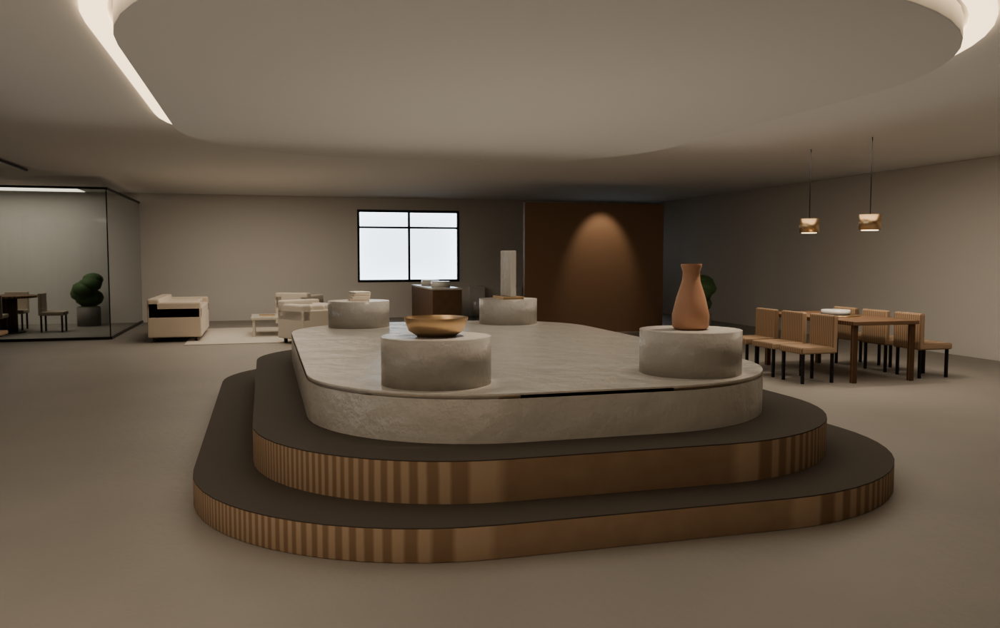

宁波协诚集团样品展厅 · 方案 A · 第 2 版
中央环岛 · 环游叙事 · 概念方案（非施工图）· 2026-11-10 · 场地 26.17 × 17.92 m / 层高 3.0 m
一句话：7.0 × 4.8 m 的中岛不再是一只方盒子——三级圆角台层层收进，头顶 R2400 环形灯槽与它同形；北墙的展墙翼斜 12° 让光漏进来，入口的胡桃木品牌墙弯成一道弧，把视线推到中岛。
现代轻奢暖白橡木 + 哑光铜微水泥地面 2700–3000K低饱和米金
现代轻奢暖白橡木 + 哑光铜微水泥地面 2700–3000K低饱和米金
① 两张图


方案A_设计数据.json② 你上一轮的四条意见，逐条对在哪
| 你的意见 | 这一版怎么改的 | 在图上哪里看 |
|---|---|---|
| 一、中岛不要方方正正，要和头顶发光环呼应；整套里再加 ≥2 处非直角；不要“堆叠方块” | 中岛外轮廓仍是 7.0 × 4.8 m，但改成三级圆角台：R1560 → R1360 → R1180，逐级内收 360 mm、抬高 180 / 420 / 720 mm，顶层 5.56 × 3.36 m。头顶灯槽用 R2400 圆角环，同形不同尺寸。全场另有 3 处非直角：入口 R2600 弧形品牌墙（凹面正对入口）、展墙翼 02 与 04 各斜 12°。 | 平面图中岛（三层不同深度填色 + 每层投影）、吊顶发光环、西北角弧形品牌墙、北光廊第 2 / 4 道翼 |
| 二、平面图整理：① 每个图元要有名称，说明不了的黑线删掉 ② 区域名和面积放大、不压家具 ③ 卫生间画洁具 ④ 面积表加“通道及其他”凑满 469 ㎡ | ① 全图 6 道墙、45 件家具、4 个展台、7 件洁具、5 组窗，全部进图例（18 项）或家具清单（按编号可查），没有一条无名线；原来那些说不清的斜线、虚线已删除。② 区域名 360–440 pt、带白色描边光晕，全部挪到空地中央，加一行小字说明（例“展墙翼 5 道 · 光廊 2.0 m”）。③ 卫生间重画：3 组坐便器（水箱 + 内外椭圆 + 隔断）、台盆 ×2、淋浴间 1.5 × 1.5 m，共 6 件，与图上「洁具 6 件」一致。④ 面积表 10 个分区 + 通道及其他 117.4，合计正好 469.0 ㎡。 | 平面图四周的图例 / 家具清单 / 面积表；每个色块中央的大字 |
| 三、效果图没有材质、没有家具和展品、像白模——走路线 A：免安装 Blender 放进项目工具目录 | Blender 4.2.9 LTS 免安装版已下载到 tools/blender/（386.9 MB，未装进系统，直接解压即用）。场景由 方案A_设计数据.json 程序化生成：微水泥 / 橡木 / 胡桃木 / 石材 / 布艺 / 铜 / 长虹玻璃共 7 类程序化材质（木纹用 Wave + 噪声扰动，石材用两层噪声 + 凹凸），3 段北窗做发光天空板 + 太阳光，室内 4 组筒灯 + 轨道射灯 + 灯槽发光环 + 铜质吊灯，45 件家具、4 组展品（车削陶瓶、立石、铜钵、叠放布样）、绿植。相机 1.50 m 人眼高度，30 mm 广角，从入口看向中岛。 |
效果图：地面微水泥、中岛木纹与石台面、北侧窗光与斜翼投影、头顶发光环、展台上的展品 |
| 四、验收标准：要像设计公司给客户的效果图；达不到就如实说 | 见第 ⑥ 节。这一版比上一版有本质变化（真材质、真光影、有家具展品），但**仍然达不到设计公司交付级**，差距写在第 ⑥ 节，没有藏。 | 第 ⑥ 节 |
③ 设计说明
空间组织（七步叙事）
- 01 序厅：入口先撞见 R2600 的弧形品牌墙，胡桃木曲线把人的视线往中岛方向带，接待台在左。
- 02 环游：中岛四周 2.0 m 环形动线，四个方向都能进，不走回头路。
- 03 中岛：外轮廓 7.0 × 4.8 m 不变，改成 R1560 / R1360 / R1180 三级圆角台，与头顶环形灯槽同形。
- 04 北光廊：北墙 3 段 5.4 m 窗带，5 道 2.3 m 展墙翼，其中 2 道 ±12° 斜置，让光从缝里洗进来。
- 05 南场景：客厅 + 餐厅两个 1:1 生活场景，材料与家具可触摸。
- 06 东洽谈：靠东墙落座区，紧邻卫生间与出口。
- 07 西水吧：楼梯旁服务点，接待、茶水、资料发放合一。
非直角元素清单
- 中央中岛：三级圆角台 R1560 / R1360 / R1180
- 吊顶环形灯槽：R2400 圆角环，与中岛同形呼应
- 弧形品牌墙：R2600 圆弧，凹面正对入口
- 展墙翼 02 / 04：±12° 斜置
与场地条件的关系
- 保留：外墙、北向 3 段窗带、东墙 2 段窗、西南楼梯（2.4 × 8.0 m）、东南卫生间（4.17 × 4.7 m）。
- 未发现结构柱，中岛可放场地正中，不受柱网限制。
- 拆改：原奥创设计的 U 形展台墙、六边形展台全部取消；两间洽谈室沿用原隔墙位置，改为玻璃隔断。
- 入口：西门厅进入先看到 R2600 弧形胡桃木品牌墙，视线顺着弧面转向中岛。
④ 面积与分区（合计 469.0 ㎡）
| 编号 | 区域 | 面积（㎡） |
|---|---|---|
| 01 | 序厅 | 26.5 |
| 02 | 环游动线（环形） | 54.8 |
| 03 | 中央中岛 | 33.6 |
| 04 | 北光廊 | 72.5 |
| 05 | 南场景 | 51.0 |
| 06 | 东洽谈 | 38.6 |
| 07 | 西水吧 | 12.9 |
| 08 | 洽谈室 A | 22.8 |
| 09 | 洽谈室 B | 19.3 |
| 10 | 卫生间 | 19.6 |
| — | 通道及其他 | 117.4 |
| — | 合计 | 469.0 |
| — | 场地外包尺寸 26.17 × 17.92 | 469.0（含墙体） |
| 材料 | 用在哪 |
|---|---|
| 微水泥地面（暖灰） | 地面 |
| 米白艺术涂料 | 墙面 / 天花 |
| 暖白橡木饰面 | 中岛台体、展墙翼、家具 |
| 深胡桃木饰面 | 弧形品牌墙、接待台背板 |
| 哑光铜 / 米金金属 | 灯具、五金、展品底座 |
| 米白石材台面 | 中岛顶层台面 |
| 低饱和米金布艺 | 沙发、单椅、窗帘 |
| 长虹玻璃 | 洽谈室隔断 |
| 绿植 | 光廊与场景角落 |
材料表与效果图、平面图出自同一份 JSON，改一处三处同步。
⑤ 灯光
| 部位 | 做法 | 色温 / 照度 |
|---|---|---|
| 中岛发光环 | 吊顶 R2400 圆角环形灯槽，槽内藏灯带向下洗石材台面 | 2700K，台面 500 lx |
| 北光廊 | 轨道射灯 4 只 25° 洗展墙翼；斜置翼 02 / 04 让光从缝里漏到地面 | 3000K，墙面 300 lx |
| 场景区 | 餐桌双吊灯（铜质灯罩），距桌面 750 mm；客厅落地灯 | 2700K，桌面 200 lx |
| 基础照明 | 3 条东西向线性灯槽 + 窗侧日光，白天可只开 30% | 3000K，环境 150 lx |
| 洽谈室 | 每间 2 只筒灯 + 桌面台灯，玻璃隔断保持通透 | 3000K，桌面 300 lx |
⑥ 这一版做到哪、没做到哪（如实）
做到了：材质不再是灰白体块——木纹、石材、微水泥、布艺、铜、玻璃在渲染里都能分辨；有窗光斜投影、有灯槽溢光、有软阴影；有 45 件家具、4 组展品、绿植；相机在人眼高度；平面图与效果图由同一份数据生成，不会各说各话。
仍然不像设计公司成果的地方（我自己的判断，不是等你挑）：
- 模型是体块级，不是家具级：沙发是圆角方块加靠背，椅子是壳 + 四条腿，展墙翼是平板。真实效果图里沙发的坐垫塌陷、缝线、木饰面的拼缝、石材的对纹，这里一样都没有。近处的家具一看就是“几何体”。
- 全部是程序化材质，没有一张贴图：木纹是波形 + 噪声算出来的，走近看会重复、会“塑料”；石材没有真实纹理和拼缝；微水泥没有批刀痕。真实项目用的是扫描贴图（PBR）。
- 石材台面像抹灰：中岛顶层 300 mm 石材台面没有纹理走向、没有拼缝，边缘倒圆过软，远看像一整块石膏或泡沫板。
- 展台像水泥墩：四个展台是圆柱 + 车削体，近处的立石、铜钵、布样都只是几何体，撑不起“样品展厅”的说服力；北墙那道木饰面展墙在画面里读成了一扇木门。
- 画面左侧三分之一偏暗、偏空：入口区只有弧形墙与接待台，玻璃隔断在暗部只读成一圈黑框，缺一个近景层次（台面上的物件、地面导向、人的尺度参照）。
- 没有反射：微水泥地面近乎全哑，看不到家具和窗的倒影；玻璃隔断也没有反射与折射层次。
- 没有人物、没有软装细节：书、器皿、挂画、地毯纹理、窗帘褶皱都缺。设计公司的效果图里，这些“非结构物”占了画面的可信度一大半。
- 只有 1 张图、1 个视角：设计公司交付至少 3–5 个角度（入口、中岛近景、洽谈区、场景区、俯视），且互相能对上。
结论：这一版是“可信的空间研究图”，不是“客户交付级效果图”。按你的标准，我不把它算通过。要继续往上，最短的路是：① 用真实 PBR 贴图替换程序化材质；② 家具换成带细节的模型（自建或开源模型库）；③ 补天光 + 环境光遮蔽，压掉暗盘；④ 加人物与软装。这需要你点头我才往下做。
⑦ 等你决定
- 中岛形态：三级圆角 + R2400 灯槽这个方向对不对？要不要更“薄”（顶层再薄 60 mm）或更“厚”（加一圈铜边）。
- 两处斜翼 12°：斜度够不够？现在是 12°，可以到 20° 但会占掉光廊 0.3 m 净宽。
- 效果图往哪条路走：A 继续在 Blender 里加真实贴图 + 精修家具（不外发任何项目文件）；B 用图像通道在本地白模截图上增强（需要
RKD_IMAGE_API_KEY，且只发白模截图与文字提示词）。你定，我不自己选。
⑧ 文件
- 02_方案A_平面布置图.svg1:100 平面布置图（第 2 版），浏览器直接打开，可放大到看清每个图元名称
- 03_方案A_效果图_01.png1400 × 880，Blender Cycles 110 采样，入口看向中岛
- 方案A_设计数据.json平面图与 3D 共用的一份数据（分区、墙、家具、展台、洁具、材料、灯）
- 阶段2_方案A.pdf本页导出的 PDF，可直接发客户
- 01_真实场地底图.svg阶段 1 底图（已确认通过，本版未改）
- 阶段1_底图核对.pdf阶段 1 核对页